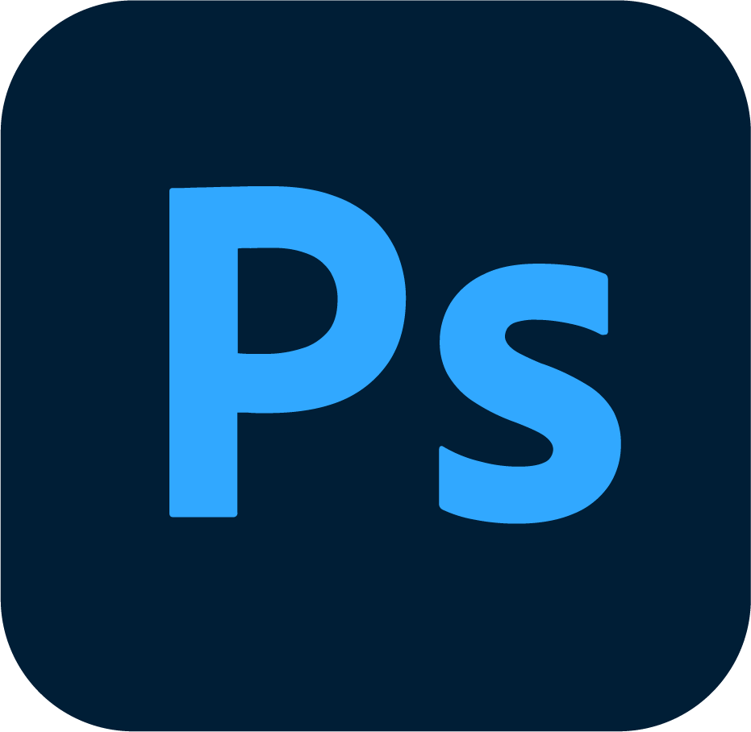
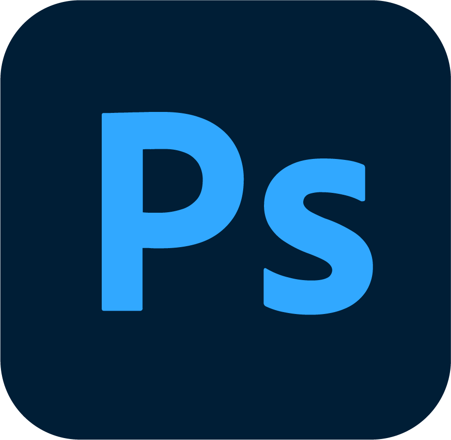

Hi there!
My name is Marieke Hepkema, and I'm a 26-year old UX designer and illustrator, based in Amsterdam. Creativity is my passion and I love turning intricate problems into beautiful, clear, user-centered designs, supported by vibrant, bold illustrations.
I believe that digital interactive products can function as a tool to better people's lives, if designed ethically and with the needs of the end user in mind. Making a positive impact, even if that just means making a mundane product more joyful to use, is something that motivates me a lot.
I've had a passion for drawing for as long as I can remember, and that passion turned into a love for digital design and illustration. I believe that implementing illustrations can strengthen your brand and the experience of your customers, and I would be happy to help you achieve that goal!
I have experience working at agencies and I love a challenge. I am proficient in both the Dutch and English language and I like international settings, which is part of the reason that I moved to Amsterdam years ago. Please have a look at my Linkedin profile for a full summary of my work experience.
Tool proficiency

 



I have basic HTML & CSS skills, which is very useful in multidisciplinary settings (and for creating portfolios!).
I completed my (Cum Laude) Bachelor's Degree in Communication and Multimedia Design in February of 2022. My graduation project was graded with a 9/10 and won a Golden Dot Award for best student work.
I have completed a premaster and gained a (WO, fully English) Master's degree in Design Cultures at VU University Amsterdam in 2024.
Have a look at my illustration instagram page if you want to see more illustration work done by me.
Let's create something great!